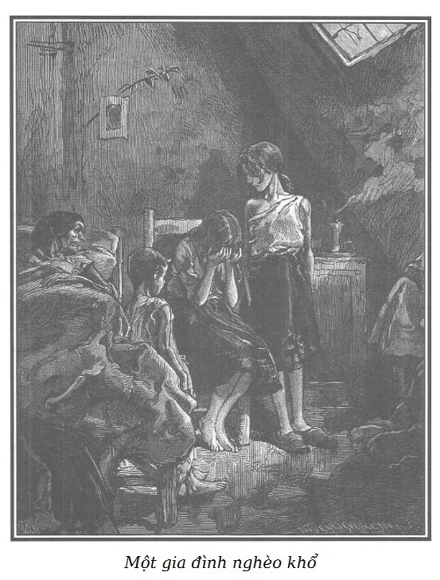

Ông Pipelet bước vào trong buồng với dáng điệu trịnh trọng, oai vệ. Ông ta khoảng sáu mươi tuổi, mũi rất to, người phì nộn, mặt to, đỏ ửng và có dáng như những cái kẹp hạt dẻ, tạo theo hình người và được sản xuất ở tỉnh Nuremberg, bộ mặt khác thường ấy lại có chụp thêm chiếc mũ loe chỏm vành rộng, đỏ hoe vì quá cũ kĩ.
Ông Pipelet không bao giờ rời chiếc mũ, chẳng khác gì bà vợ không bao giờ rời mớ tóc giả kỳ quái, thoải mái trong một chiếc áo dài, vạt rộng thùng thình, ve áo đầy những vết bẩn đến mức đôi chỗ bóng loáng lên. Dù có chiếc mũ loe chỏm và bộ áo màu lục, trông ông ta vẫn có vẻ đàng hoàng đúng nghi biểu. Tuy thế, ông Pipelet cũng vẫn không rời biểu hiện khiêm tốn của nghề cũ: một chiếc tạp dề bằng da hình tam giác màu hung, ngự trên áo gi-lê dài sặc sỡ đủ màu chẳng kém gì cái chăn ngũ sắc của bà vợ.
Ông Pipelet chào Rodolphe khá nhã nhặn, nhưng than ôi, nụ cười của ông ta buồn rười rượi.
Người ta thấy rõ nét u buồn sâu sắc trong nụ cười ấy, đúng như bà Pipelet từng nói với Rodolphe.
Bà Pipelet giới thiệu Rodolphe với chồng:
– Ông ạ, ông đây là người muốn thuê căn phòng và gian buồng gác tư; chúng tôi đang đợi ông để uống rượu lý chua đen ông ấy đãi.
Cử chỉ quan tâm tế nhị ấy khiến ông Pipelet lập tức tin cậy ngay vào Rodolphe, ông ta đưa tay lên vành mũ đằng trước và nói với một giọng trầm xứng đáng được kén vào đội hát lễ trong nhà thờ:
– Chúng tôi, những người gác cổng sẽ khiến ông toại ý, thưa ông, cũng như ông sẽ khiến chúng tôi hài lòng ở cương vị người thuê nhà, đồng thanh tương ứng mà!
Rồi, đột nhiên ông Pipelet đổi giọng, băn khoăn:
– Tuy vậy, nhưng thưa ông, ít ra thì ông cũng không phải là họa sĩ kia!
– Không ạ, tôi là nhân viên chào hàng.
– Thế thì thưa ông, tôi xin kính cẩn hầu ông. Xin cảm ơn bề trên đã không nặn ông thành một nghệ sĩ quái ác.
Rodolphe ngạc nhiên:
– Nghệ sĩ… quái ác?
Ông Pipelet, thay vì câu trả lời, chỉ đưa hai tay lên trời và hầm hừ rên rẩm.
Bà Pipelet giải thích khẽ khàng:
– Chính là mấy ông họa sĩ đã làm tội ông ấy, họ đã gây ra nỗi u buồn mà tôi đã nói đến lúc nãy đấy, ông ạ. – Rồi bà ta êm ái dỗ dành. – Nào, ông Alfred, hãy tỏ ra biết điều một tí, đừng nghĩ đến thằng đểu ấy nữa, ông lại ốm, lập tức đến phải bỏ cơm bây giờ!
– Không đâu! Tôi sẽ dùng cơm và biết điều, – ông Pipelet nghiêm trang trả lời tuy vẫn tỏ ra buồn bã, nín nhịn. – Hắn đã làm khổ tôi nhiều lần rồi, hắn là kẻ đã hành hạ tôi, là tên đao phủ của tôi khá lâu rồi, nhưng giờ thì tôi khinh đứt hắn đi. Bọn họa sĩ, – ông ta quay lại với Rodolphe và nói tiếp – cha chả, ông ạ, chúng như là ôn thần trong nhà ấy, có chúng thì chỉ có ồn ào, bại hoại.
– Đã có họa sĩ thuê ở đây à?
– Chao ôi! Thưa ông, vâng ạ, chúng tôi đã có một thằng họa sĩ thuê nhà, – ông Pipelet cay đắng nói – một họa sĩ tên là Cabrion!
Nhớ tới chuyện cũ, mặc dù bề ngoài vẫn có vẻ ôn hòa đôi chút, ông gác cổng vẫn nắm chặt hai bàn tay run rẩy vì tức giận.
– Thế có phải là người trước đây đã ở căn phòng mà tôi định thuê không?
– Không! Không! Người thuê trước ông là một cậu trai đứng đắn, trung hậu, có nhân cách, tên là Germain kia! Nhưng trước cậu ta là Cabrion. Chao ôi! Từ ngày hắn ra đi, cái thằng Cabrion ấy suýt nữa khiến tôi phát điên, phát cuồng, hóa ngây, hóa dại…
– Ông tiếc hắn đến thế kia à?
– Lại còn tiếc hắn nữa! – Ông Pipelet tiếp tục nói với giọng sững sờ. – Có mà tiếc cái thằng ấy! Nhưng ông thử hình dung mà xem; ông Cánh Tay Đỏ đã phải thí cho hắn hai kỳ tiền thuê nhà để cho hắn cút khỏi nơi đây. Vì không may, người ta đã cho hắn ký hợp đồng. Cái thằng vô lại! Ông không thể nào tưởng tượng nổi những trò chơi khăm của hắn đối với chúng tôi và những người thuê nhà khác. Chỉ nói về một trò thôi! Không có một thứ kèn hơi nào mà hắn không đem ra dùng một cách xỏ lá để khiến chúng tôi và những người thuê nhà khác mất ăn mất ngủ. Đúng thế ông ạ! Từ kèn đồng đi săn đến kèn cuộn, ông ơi, hắn đem ra dùng tất, xỏ lá tới mức cứ thổi sai điệu, cố tình thổi sai nốt nhạc hàng giờ! Đến phát điên lên với hắn! Người ta kêu ca nhiều lần với ông trương nhà là ông Cánh Tay Đỏ để tống khứ thằng vô lại ấy đi. Cuối cùng, đuổi được hắn nhưng mà phải chịu cho hắn hai kỳ tiền. Thật buồn cười và kỳ lạ phải không ông? Trả hai kỳ tiền cho người thuê nhà! Nhưng giá có phải trả đến ba kỳ tiền để cho rảnh nợ thì người ta cũng bằng lòng! Thế là hắn cút! Ông tưởng thế là xong cái vạ thằng Cabrion ư? Đâu có! Ông xem, đúng lúc mười một giờ đêm tôi đã đi nằm. Cộc! Cộc! Tôi kéo dây cửa. Có người đến buồng gác: “Chào ông gác cổng, ông vui lòng cho tôi một nắm tóc của ông nhé.” Bà nhà tôi bảo: “Họ nhầm nhà đấy!” Tôi trả lời người lạ mặt: “Không phải ở đây đâu! Ở nhà bên cạnh kia.” “Nhưng đây đúng là nhà số 17 rồi! Người gác cổng tên là Pipelet phải không. Này này, ông bạn Pipelet ơi, tôi đến xin ông một túm tóc cho ông Cabrion đấy! Đó là ý nguyện của ông ta, ông ta cố tình đòi thế đấy! Đòi cho bằng được!”
Ông Pipelet nhìn Rodolphe lắc đầu và khoanh tay lại như một pho tượng:
– Ông hiểu chứ, thưa ông, chính là với tôi, kẻ tử thù của hắn mà hắn lăng nhục không ngớt! Hắn lại còn trâng tráo đòi tôi phải cho hắn một túm tóc của tôi, một ân huệ mà ngay cả các bà phụ nữ cũng có lúc từ chối người tình yêu quý của họ.
– Nhưng nếu tay Cabrion ấy cũng là người thuê nhà đứng đắn như cậu Germain, thì tưởng cũng nên cho hắn chứ! – Rodolphe cứ tỉnh khô mà nói như vậy.
– Dù hắn có là người thuê nhà đứng đắn đi chăng nữa thì tôi cũng không thèm cho hắn cái túm tóc ấy. – Ông lão đội mũ loe chỏm nói một cách oai vệ. – Không hề có chuyện đó trong những nguyên tắc cũng như thói quen của tôi; tôi tự thấy có bổn phận, có đạo nghĩa là phải bác yêu cầu của hắn!
– Vậy mà đã xong đâu! – Bà gác cổng nói tiếp. – Ông thử tưởng tượng xem; thưa ông, từ hôm đó, vào buổi sáng, vào buổi chiều, vào ban đêm, vào bất kỳ giờ nào, thằng cha Cabrion ghê gớm cũng lại cử một lũ vô lại, hết đứa nọ đến đứa kia đến đòi xin tóc ông Pipelet cho Cabrion, lúc nào cũng là cho Cabrion!
– Ông nghĩ xem, tôi đâu có chịu! – Ông Pipelet nói, vẻ kiên quyết. – Chẳng thà để người ta lôi tôi ra pháp trường còn hơn! Sau đến ba, bốn tháng, về phía chúng, chúng cứ dai dẳng như thế, còn về phía tôi, tôi cũng ngoan cường bền bỉ không kém, cuối cùng nghị lực của tôi đã thắng sự bám riết cay cú của chúng, chúng thấy chúng húc đầu vào núi đá! Và rồi chúng phải từ bỏ những mưu toan ngạo mạn, xấc láo ấy đi. Nhưng, thưa ông, dù sao tôi cũng bị đau ở đây! – Ông đưa tay lên ngực phía trái tim. – Cho dù tôi đã trót phạm những tội ác ghê gớm đi nữa thì tôi cũng chẳng bị dằn vặt trong giấc ngủ đến như thế. Mỗi lúc tôi lại giật mình tỉnh dậy, tưởng như nghe tiếng cái thằng chết toi Cabrion. Tôi đâm ra nghi ngờ tất cả mọi người. Ai tôi cũng tưởng là kẻ thù. Tôi chẳng còn nhã nhặn như xưa. Tôi không thể thấy một khuôn mặt lạ nào ở cửa kính của buồng gác mà không rùng mình cho rằng đó là một tên trong bọn Cabrion. Và ngay bây giờ nữa kia, tôi đâm ra đa nghi, cau có, rầu rĩ và hay thần hồn nát thần tính như một kẻ gian phi ấy! Tôi ngại cởi mở tâm hồn trước người mới quen biết, chỉ sợ lại gặp phải một vài tên nào đó trong bọn của Cabrion, tôi chẳng còn thiết cái gì nữa!
Đến đây, bà Pipelet đưa ngón trỏ lên mắt trái làm như chùi một giọt nước mắt và gật gật cái đầu, đồng tình.
Ông Pipelet lại tiếp tục, càng nói càng ai oán, thê thảm:
– Cuối cùng thì tôi co mình lại, và cứ thế mà sống. Thưa ông, tôi nói không sai, cái tên Cabrion ấy đã làm hại đời tôi.
Thế rồi ông Pipelet thở dài, ủ rũ cúi đầu vì nỗi bất hạnh lớn lao ấy.
Rodolphe an ủi:
– Bây giờ thì tôi thấy rõ rằng ông không ưa lũ họa sĩ là phải, nhưng dù sao thì ít nhất cũng có một cậu Germain bù lại rồi kia mà!
– À, thưa ông, đúng thế ạ! Đây mới là cậu trai tốt bụng và đứng đắn, thật thà như đếm, hay giúp đỡ người khác và lại không hay làm bộ, vui tính nhưng chẳng làm mất lòng ai chứ không xấc xược, thích nhạo báng người khác như thằng cha Cabrion ôn vật ấy.
– Nào hãy bình tĩnh lại, hỡi ông Pipelet thân mến, thôi đừng nhắc đến cái tên ấy nữa! Và bây giờ thì ông chủ nào có nhà cho thuê may mắn gặp được cậu Germain, người thuê-nhà-trời-cho ấy nhỉ?
– Không ai thấy, không ai biết ạ, bây giờ chẳng có ai biết mà sau này cũng chẳng ai biết cậu Germain ở đâu nữa. Khi tôi nói chẳng có ai tức là không kể cô Rigolette đấy.
– Thế cô Rigolette là ai vậy?
– Một cô thợ nhỏ, người thuê một buồng khác cũng ở tầng bốn. Lại cũng là người thuê nhà quý như trời cho, tiền nhà thì trả trước hạn và đến là sạch sẽ tinh tươm, người cũng như nhà ở. Và đến là tử tế với tất cả mọi người. Và đến là vui tính… Thật đúng như là một con chim của Đức Chúa thiện lành mới có thể vui vẻ và duyên dáng như thế! Đã vậy lại rất ham việc, siêng năng chăm chỉ như con kiến tha mồi. Có lúc kiếm được đến hai franc một ngày, nhưng eo ơi! Phải thật là vất vả mới được bằng ấy!
– Nhưng tại sao chỉ có mình cô Rigolette biết được cậu Germain ở đâu thôi nhỉ?
– Khi rời khỏi nhà này, cậu ta bảo: “Tôi không chờ lá thư nào cả nhưng nếu tình cờ mà có cái nào thì nhờ trao cho cô Rigolette giúp tôi.” Như thế kể ra cô này cũng xứng đáng với lòng tin của cậu ấy, dù sao thì lá thư cũng như là được gửi qua bưu điện, phải không ông Alfred?
– Chẳng có điều gì phải nói về cô Rigolette cả, – ông gác cổng nói một cách nghiêm trang – nếu cô ấy không nhẹ dạ để cho cái thằng Cabrion ấy bờm xơm…
– Về mặt này, ông Alfred ạ, – bà gác cổng nói – đâu có phải lỗi ở cô Rigolette mà do thiết kế của ngôi nhà này chứ! Vì đối với người chào hàng thuê buồng trước Cabrion cũng thế, mà sau này, sau thằng họa sĩ tai ác ấy thì đến cậu Germain cũng vậy, ai chẳng muốn lấy lòng cô ấy đấy thôi; nói đi nói lại thì cũng chẳng được gì hơn, tất cả chỉ tại cái nhà!
– Như vậy, – Rodolphe nói – khách nào ở buồng mà tôi đang muốn thuê cũng nhất thiết phải ve vãn cô Rigolette hay sao?
– Tất nhiên thôi, ông ạ. Ông sẽ hiểu! Là hàng xóm với cô Rigolette, hai buồng kề nhau, vậy thì trai gái đương xoan, lúc tối lửa tắt đèn, cái đóm, hòn than xin xỏ, tí nước tí nôi, tránh sao được. Mà nói đến nước thì chắc chắn lúc nào cô ấy cũng sẵn, chẳng bao giờ thiếu. Lúc nào cũng phải dồi dào như là đối với vịt con ấy! Hễ cứ rảnh tay là lau chùi nhà cửa. Vì thế nhà lúc nào cũng sạch như lau như li ấy. Rồi ông sẽ biết thôi.
– Vậy là cậu Germain, do nhà cửa gần kề, như bà nói ấy, mà thành ra láng giềng tốt đối với cô Rigolette nhỉ!
– Đúng vậy, thưa ông! Và có thể nói họ sinh ra để mà hợp với nhau ấy. Đều là dễ thương, trẻ trung cả, cứ trông thấy họ sánh đôi đi xuống cầu thang ngày Chủ nhật, ngày nghỉ duy nhất của họ, đôi trẻ đáng thương ấy, mà vui con mắt. Cô thì đội mũ trùm đầu rõ xinh, mặc váy bằng thứ hàng giá hai mươi lăm xu một mét hai tự khâu lấy mà vừa vặn, đẹp cứ như áo hoàng hậu, còn cậu thì ăn mặc đúng mốt cứ như là công tử con nhà phái bảo hoàng ấy.
– Thế là cậu Germain, kể từ ngày rời nhà này không hề gặp lại cô Rigolette nhỉ?
– Thưa không ạ! Ít ra thì cũng phải là ngày Chủ nhật. Vì những ngày khác thì cô Rigolette làm gì có thời giờ nghĩ đến chuyện yêu đương. Cô ấy thức dậy từ năm, sáu giờ sáng và khâu vá đến mười giờ đêm, có khi đến mười một giờ, chẳng mấy khi ra khỏi buồng, trừ lúc sáng sớm để đi chợ mua thức ăn cho cô ấy và hai con chim yến, cả bữa ăn cũng chẳng biết bao nhiêu. Cần những thứ gì cho tất cả bộ ba ấy? Hai xu sữa này, một ít bánh mì, rồi kê và nước lã; ấy vậy mà cả ba cứ líu lo, lảnh lót suốt ngày cứ như là được Chúa ban phước lành vậy!
– Đã thế lại tốt bụng và chăm làm việc thiện bằng công sức của mình; nghĩa là khâu vá thêm, lấn vào giấc ngủ và việc chăm sóc, có lúc phải đến hơn mười hai giờ một ngày, như thế mà cũng chỉ đủ sống. Ông ạ, những người cùng khổ ở gác xép sát mái nhà ấy mà, ông Cánh Tay Đỏ sẽ đuổi họ ra khỏi nhà vài ba ngày nữa đấy! Chính cô Rigolette và cậu Germain đã thức mấy đêm liền để chăm sóc mấy đứa trẻ nhà ấy đấy!

.– Ở đây cũng có một gia đình cùng khổ sao?
– Khổ cực lắm ông ạ! Lạy Chúa, chắc chắn là như thế! Năm đứa trẻ còn nhỏ, người mẹ ốm liệt giường gần chết, bà mẹ già dở người và chỉ có một người nuôi cả nhà, ăn không được no mà vẫn phải làm quần quật như nô lệ. Mà là thợ có tay nghề rất cứng đấy! Chỉ dành ba giờ đồng hồ một ngày để ngủ mà ngủ đâu có được đầy giấc? Khi thì bị con cái kêu đói đánh thức, khi thì vợ rên rẩm trên ổ rơm, hay là bà mẹ già dở người cứ rú lên từng hồi như sói cái ấy… Vì đói thôi! Bà ta mất hết cả lý trí, chẳng khác gì loại thú cả, khi bà ta thèm ăn quá thì bà ta rú lên, nghe thấu cả mấy tầng thang gác.
– Chà, nghe mà kinh quá. – Rodolphe chép miệng. – Thế không có ai giúp đỡ họ sao?
– Có chứ, ông ơi! Nhưng những người nghèo khổ với nhau thì chỉ giúp được đến đâu hay đến đấy! Từ ngày tay chỉ huy trả tôi mười hai franc công coi sóc nhà cửa thì mỗi tuần tôi lại nấu một nồi thịt bò hầm và những người nghèo trên đó có xúp ăn. Cô Rigolette thì làm thêm ban đêm! Cô ấy phải bỏ tiền dầu đèn để chắp những mụn vải rồi khâu thành áo cánh và mũ trẻ con cho mấy đứa nhỏ. Còn cậu Germain thì cũng chẳng giàu có gì mà vẫn thỉnh thoảng làm như được người ở quê ra cho vài chai rượu và thế là bác Morel, ông thợ ấy có tên như vậy, mới được uống vài chén cho ấm bụng và đôi lúc phấn chấn lên được phần nào.
– Thế lão lang băm không giúp được gì cho họ à?
– Lão Bradamanti ấy à? – Ông gác cổng nói. – Lão chữa cho tôi khỏi chứng thấp khớp; đúng vậy, tôi vì nể lão, nhưng mà từ cái ngày mà tôi đã nói với bà nhà tôi “Bà Anastasie ạ, lão Bradamanti…” Hừ! Tôi chẳng nói với bà đó sao, bà Anastasie?
– Phải, ông đã nói với tôi thế, nhưng lão ấy chỉ thích cười, cười theo lối của lão, ít ra là như thế. Vì cười mà hai hàm răng vẫn cắn chặt không nhả!
– Thế lão làm được những gì?
– Thế này, ông ạ, khi tôi nói cho lão ấy biết về tình cảnh cùng cực của Morel, đúng lúc lão vừa phàn nàn bà già dở người cứ rú lên vì đói suốt cả đêm khiến lão mất ngủ, thì lão bảo tôi: “Họ mà khổ đến như vậy thì nếu họ cần nhổ răng, tôi cũng chỉ tính tiền cái thứ sáu và tôi còn bán cho họ hai chai thuốc nước của tôi mà chỉ lấy có nửa tiền thôi!”
– Thế là thế nào? – Ông Pipelet hơi bực. – Mặc dù lão đã chữa cho tôi khỏi chứng thấp khớp, tôi vẫn giữ ý kiến cho rằng đó là một câu đùa bất nhã. Nhưng có nói gì khác đi nữa… thì cũng vẫn là quá sỗ sàng.
– Ông nghĩ xem, ông Alfred ạ, vì lão là người Ý và có thể đó là cách đùa ở xứ họ thì sao?
Ông Pipelet nói:
– Bà Pipelet ơi, rõ ràng là bà đánh giá lão thấp rồi, tôi sẽ không nghe lời bà nói mà đi lại giao du với lão đâu.
– Thế còn mụ cho cầm đồ ấy, mụ có thương người hơn được chút nào chăng?
– Chà! Cũng theo kiểu lão Bradamanti, mụ ấy đã cho họ cầm mớ áo rách. Tất cả gia sản nhà ấy vào tay mụ hết, kể cả tấm đệm cuối cùng. Cũng chẳng phải đắn đo lâu, họ chẳng bao giờ có đến hai cái!
– Và lúc này thì mụ không giúp cho họ sao?
– Mụ Burette ấy à? Lầm to! Cũng một loại keo kiệt chẳng khác gì ông nhân ngãi, vì ông Cánh Tay Đỏ và mụ Burette ấy mà… – Bà Pipelet nhay nháy con mắt và gật gật cái đầu một cách láu lỉnh, khác thường.
– Thật ư?
– Chắc chứ! Chắc! Keo sơn gắn bó suốt đời! À này, đúng là mạt cưa mướp đắng, cũng đều một giuộc có phải không ông lão?
Ông Pipelet không nói không rằng chỉ trả lời bằng cách rầu rĩ lúc lắc chiếc mũ loe chỏm.
Từ lúc bà Pipelet tỏ vẻ ái ngại cho gia đình bần cùng nơi gác xép sát mái, Rodolphe thấy bà trở nên dễ coi hơn.
– Thế người thợ tội nghiệp ấy làm nghề gì?
– Bác ấy làm nghề mài ngọc giả, bác ấy làm khoán từng hạt một và làm khá nhiều, nhiều đến mức bác ấy cũng trở thành dị dạng vì nghề ấy. Ông sẽ thấy thôi! Dù sao vẫn là con người, làm được đến đâu thì làm, có phải không ạ? Vì khi phải nuôi cả gia đình với bảy miệng ăn, không tính đến mình, thì quả là khó khăn quá. Còn may là có đứa con gái lớn giúp được tí nào thì giúp nhưng cũng chẳng được mấy nỗi.
– Thế cô gái ấy bao nhiêu tuổi?
– Mới mười bảy tuổi, và đẹp, đẹp cứ như tranh vẽ ấy, con bé đi ở cho một lão già keo kiệt, giàu đến mức có thể tậu cả thành phố Paris này, một lão chưởng khế tên là Jacques Ferrand.
– Jacques Ferrand à? – Rodolphe ngạc nhiên vì sự tao ngộ ấy. Vì chính viên chưởng khế này và ít ra là ở mụ quản gia của lão mà ông phải tìm cho ra những điều cần thiết liên quan đến Marie. – Ông Ferrand ở phố Sentier phải không?
– Đúng ạ! Ông biết lão ấy à?
– Lão ấy là chưởng khế của hãng buôn nơi tôi làm việc.
– Vậy thì ông phải biết đấy là một tay cho vay cắt cổ, biển lận, nhưng công bằng mà nói, lại lương thiện và ngoan đạo… Chủ nhật nào cũng đi lễ chầu misa và cầu kinh buổi chiều, chịu lễ ban thánh thể vào dịp Phục sinh, uống nước phép và ngốn bánh thánh… một người thánh thiện chứ gì! Những người nghèo ít vốn dành dụm được tí tiền nào đều gửi ở quỹ tiết kiệm của lão. Nhưng chao ôi! Lão hà tiện và riết róng với người khác cũng như bản thân. Thế là mười tám tháng nay, con bé Louise tội nghiệp nhà bác thợ mài ngọc đi ở cho lão, con bé hiền lành như một con bê con, làm quần quật như trâu như ngựa. Làm đủ mọi việc với mười tám franc một tháng để chi dùng cho mình sáu franc, còn bao nhiêu thì dành cho gia đình, lúc nào chẳng như vậy; khi mà cả bảy người phải trông vào đấy mà sống.
– Nhưng công việc của ông bố, nếu bác ấy cần cù như thế thì có thể lo cho gia đình chứ?
– Bác ấy rất cần cù! Đó là một con người mà suốt cả đời chỉ có nhịn, chí thú, hiền lành như đức Chúa Jesus, chỉ biết cầu Chúa ban phép lạ làm sao mà ngày dài đến mười tám giờ để có thể kiếm thêm cơm cho lũ con…
– Công sá kém thế kia à?
– Bác ấy đã bị ốm mất ba tháng và do đó mà bị thiếu nợ, bà vợ thì kiệt sức vì chăm sóc chồng và giờ này cũng sắp chết; chính trong ba tháng ấy mà cả nhà phải trông vào mười hai franc của Louise cộng với tất cả những số tiền vay được ở mụ Burette, và với vài écu* mà người môi giới thuê bác làm ngọc giả ứng cho mà sống. Nhưng nuôi những tám người! Tôi lại cứ nói về vấn đề ấy mãi, và nếu ông thấy chỗ mà họ ở nhỉ! Nhưng thôi ông ạ, đừng nhắc chuyện ấy nữa! Cơm đã nấu xong, và nếu cứ nghĩ đến gia đình ở tầng gác xép sát mái nhà ấy là tôi cồn cào cả ruột gan lên. May sao mà ông Cánh Tay Đỏ sắp đuổi họ đi khỏi nhà này! Tôi nói may sao, không phải vì tôi xấu bụng đâu, ít nhất là như thế, nhưng bởi vì gia đình bác Morel khổ quá và chúng tôi cũng chịu chẳng còn có cách nào giúp họ được thì chẳng thà họ chịu khổ ở nơi khác cũng được, càng đỡ đau lòng.
Đồng tiền xu của Pháp.
– Nhưng nếu bị đuổi đi, thì họ đi đâu bây giờ?
– Tôi biết làm sao được ạ!
– Thế mỗi ngày bác thợ ấy kiếm được bao nhiêu?
– Nếu không phải chăm sóc bà mẹ, người vợ và mấy đứa con thì bác ấy thừa kiếm được bốn đến năm franc mỗi ngày vì bác ấy lăn vào mà làm nhưng vì mất đến ba phần tư thời gian vào việc nội trợ thì kiếm được bốn mươi xu là giỏi lắm.
– Ít quá thật! Họ nghèo quá, tội nghiệp.
– Đúng thế, họ đáng thương quá; nói vậy mới đúng. Nhưng người nghèo khổ thì quá nhiều mà bởi vì không có cách nào thì cũng đành chịu thôi, biết làm sao được, phải không ông? Ông Alfred, nói đến khuây khỏa thì sẵn rượu lý chua đen đấy, ông không đụng đến à?
– Thật tình, bà Pipelet ạ, những điều mà bà cho tôi biết đã khiến tôi đau lòng, bà sẽ cùng ông nhà nâng cốc chúc sức khỏe cho tôi, nhé!
– Ông tốt quá, thưa ông, – ông gác cổng nói – thế ông vẫn muốn đi xem cái phòng gác trên chứ?
– Tôi sẵn sàng thôi! Nếu hợp với tôi, tôi sẽ gửi ông tiền phong bao.
Người gác cổng ra khỏi buồng, Rodolphe đi theo.